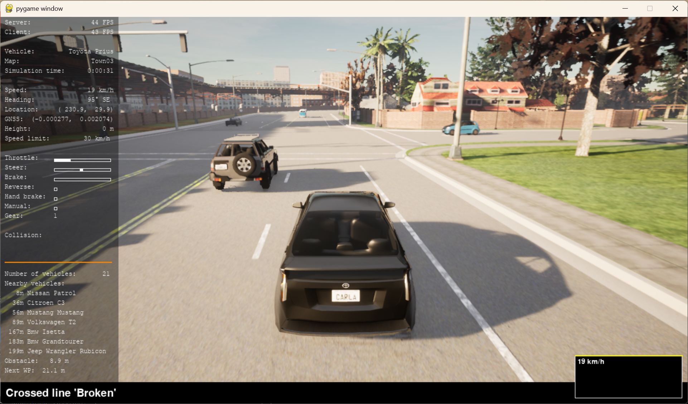
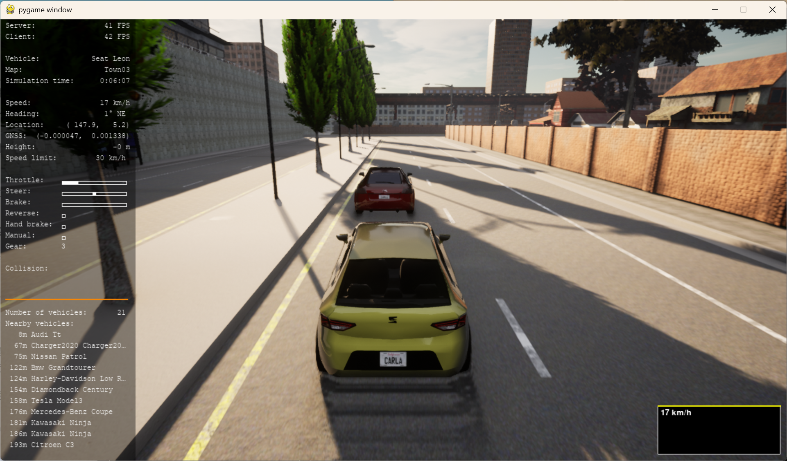

CARLA 自动驾驶控制客户端
目录
- 项目简介
- 功能特性
- 快速开始
- 环境要求
- 安装步骤
- 运行方式
- 运行效果
- 核心技术
- 手动/自动模式切换
- 最高速度限制
- 自适应巡航控制（ACC）
- 自动紧急制动（AEB）
- HUD 增强显示
- 命令行接口
- 项目结构
- 数据输出
- 参考资料
项目简介
本项目基于 CARLA 模拟器 0.9.11，实现了一个功能丰富的自动驾驶控制客户端。在官方示例的基础上，增加了手动/自动模式切换、最高速度限制、自适应巡航控制（ACC）、自动紧急制动（AEB）、增强型 HUD、数据记录以及机器学习集成（MLP 神经网络预测 ACC 目标速度）等多项功能。
核心优势： - 🎮 灵活控制：一键切换手动/自动驾驶，适配测试与演示需求 - 🚦 安全优先：AEB 主动紧急制动，ACC 动态跟车，限速双重保护 - 📊 数据驱动：支持采集训练数据，集成 MLP 模型优化跟车平顺性 - 🖥️ 信息丰富：HUD 显示道路限速、障碍物距离、路径点距离、速度曲线等
功能特性
| 特性 | 描述 |
|---|---|
| 🎮 手动/自动模式切换 | 按 P 键即时切换，手动控制支持 WASD/方向键、Q 倒车、空格手刹 |
| 🚦 最高速度限制 | 通过 --max_speed 设置硬上限，超速时自动减小油门并线性刹车 |
| 🚗 自适应巡航控制 (ACC) | 根据前车距离自动调整速度，支持规则线性插值或 MLP 神经网络预测 |
| 🛑 自动紧急制动 (AEB) | 障碍物距离小于阈值时强制全力刹车，避免碰撞 |
| 📊 HUD 增强显示 | 道路限速、下一个路径点距离、前方障碍物距离、实时速度曲线、超速红字警示 |
| ⌨️ 交互快捷键 | R 重规划路径，V 截图，P 模式切换，ESC/Ctrl+Q 退出 |
| 💾 数据记录 | 记录当前车速、障碍物距离、目标速度，用于训练机器学习模型 |
| 🧠 机器学习集成 | 训练好的 MLP 神经网络替代规则插值，实现更平滑的跟车行为 |
快速开始
环境要求
- Python: 3.7
- CARLA Simulator: 0.9.11
- 操作系统: Windows / Linux
- 依赖库: pygame, numpy, scikit-learn, joblib, csv
安装步骤
# 1. 将主程序 main.py 放入 CARLA 的 PythonAPI/examples 目录
# 2. 安装 Python 依赖
pip install pygame numpy scikit-learn joblib
安装 CARLA 模拟器：
- 下载 CARLA 0.9.11 版本，解压到本地。
- 运行 CarlaUE4.exe（Windows）或 ./CarlaUE4.sh（Linux）启动服务器。
运行方式
# 1. 启动 CARLA 模拟器（单独窗口）
# CarlaUE4.exe
# 2. 运行自动驾驶客户端（默认 BehaviorAgent）
py -3.7 main.py --agent Behavior
# 3. 启用 ACC 并使用 MLP 模型，限速 50 km/h
py -3.7 main.py --agent Behavior --max_speed 50 --acc_enable --ml_acc
# 4. 手动驾驶模式（按 P 切换）
py -3.7 main.py --agent Behavior --max_speed 40
# 5. 开启循环行驶和数据记录
py -3.7 main.py --agent Behavior --loop --record_data acc_data.csv
运行效果
下图展示了启用 MLP 模型后，车辆在自适应巡航控制下的平稳跟车表现（HUD 中可见跟车距离和速度曲线）。


图：车辆跟随前车时，速度曲线平滑，障碍物距离稳定在合理范围内，加减速平缓。
核心技术
手动/自动模式切换
- 实现：
KeyboardControl类监听P键，设置manual_mode标志。 - 手动模式：读取键盘状态生成
carla.VehicleControl（油门、刹车、转向、倒车、手刹）。 - 自动模式：调用
agent.run_step()获取控制指令。 - 切换时 HUD 显示当前模式。
最高速度限制
- 硬限速：
--max_speed参数，超速时将油门置零并线性施加刹车。 - 道路限速显示：
world.player.get_speed_limit()实时获取。 - 超速警示：HUD 速度数字自动变为红色。
自适应巡航控制（ACC）
- 规则模式：根据障碍物距离线性插值计算目标速度：
obs_dist < acc_min_dist→ 目标速度 0acc_min_dist ≤ obs_dist < acc_max_dist→ 线性插值obs_dist ≥ acc_max_dist→ 目标速度 =--max_speed- MLP 模式（
--ml_acc）：使用预先训练的神经网络（输入：当前车速、障碍物距离；输出：目标速度），在测试集上 R² 达 0.9993。 - P 控制器（
Kp=0.05,base_throttle=0.25）实现速度闭环。
自动紧急制动（AEB）
- 依赖障碍物检测（
world.hud.current_obstacle）。 - 当障碍物距离 <
--aeb_distance（默认 5 米）时，强制设置throttle=0, brake=1.0，并显示 HUD 通知。 - 优先级高于 ACC 和限速。
HUD 增强显示
- 使用 Pygame 绘制，
HUD.tick更新信息： - 服务器/客户端 FPS、车辆型号、地图、仿真时间
- 车速、航向、位置、GNSS、高度
- 道路限速（
Speed limit） - 下一个路径点距离（
Next WP） - 前方障碍物距离（仅车辆和行人）
- 实时速度曲线（右下角黄色折线，左上角显示当前速度）
- 超速时速度数字变为红色。
命令行接口
py -3.7 main.py [-h] [--host H] [-p P] [--res WIDTHxHEIGHT]
[--filter PATTERN] [--gamma GAMMA] [-l] [-b {cautious,normal,aggressive}]
[-a {Behavior,Roaming,Basic}] [-s SEED] [--max_speed MAX_SPEED]
[--aeb_distance AEB_DISTANCE] [--acc_enable] [--acc_max_dist ACC_MAX_DIST]
[--acc_min_dist ACC_MIN_DIST] [--record_data RECORD_DATA] [--ml_acc]
| 参数 | 说明 | 默认值 |
|---|---|---|
--host |
CARLA 服务器 IP | 127.0.0.1 |
-p, --port |
端口 | 2000 |
--res |
窗口分辨率 | 1280x720 |
--filter |
车辆过滤器 | vehicle.* |
--gamma |
相机伽马校正 | 2.2 |
-l, --loop |
循环行驶 | False |
-b, --behavior |
行为风格 | normal |
-a, --agent |
代理类型 | Behavior |
-s, --seed |
随机种子 | None |
--max_speed |
最高速度（km/h） | 100.0 |
--aeb_distance |
AEB 触发距离（米） | 5.0 |
--acc_enable |
启用 ACC | False |
--acc_max_dist |
ACC 恢复全速距离（米） | 15.0 |
--acc_min_dist |
ACC 完全停车距离（米） | 5.0 |
--record_data |
数据记录 CSV 文件 | None |
--ml_acc |
使用 MLP 模型 | False |
项目结构
carla_autonomous_control/
├── docs/ # 文档目录
│ └── carla_autonomous_control/
│ ├── index.md # 本 README
│ └── image/ # 效果截图
│ ├── mlp_acc_following_1.png
│ └── mlp_acc_following_2.png
├── src/ # 源代码目录
│ ├── main.py # 主程序（实际为 automatic_control_revise_11.py）
│ └── README.md # 项目说明（可链接到 docs）
├── train_mlp.py # MLP 模型训练脚本（可选）
├── acc_mlp_model.pkl # 训练好的 MLP 模型
├── acc_scaler.pkl # 特征标准化器
├── _screenshots/ # V 键截图保存目录
├── acc_data.csv # 采集的 ACC 训练数据
└── README.md # 项目说明（本文件）
核心文件说明
| 文件 | 职责 |
|---|---|
main.py |
主程序，集成所有功能（模式切换、限速、ACC、AEB、HUD、快捷键等） |
train_mlp.py |
独立训练脚本，使用 scikit-learn 训练 MLP 回归模型 |
acc_mlp_model.pkl |
序列化的 MLP 模型 |
acc_scaler.pkl |
特征标准化器（StandardScaler） |
_screenshots/ |
存放 V 键截图 |
acc_data.csv |
数据记录输出（当使用 --record_data 时生成） |
数据输出
当使用 --record_data 时，会生成 CSV 文件，包含以下字段：
| 字段 | 单位 | 说明 |
|---|---|---|
current_speed |
km/h | 当前车速 |
obstacle_dist |
米 | 前方最近障碍物距离（无前车时为 -1） |
target_speed |
km/h | ACC 计算的目标速度（规则或 MLP） |
这些数据可用于后续模型训练或分析。
参考资料
- CARLA Simulator Documentation
- CARLA Python API Reference
- Behavior Agent
- Scikit-learn MLPRegressor
- Pygame Documentation
许可证
本项目基于 MIT 许可证，原始代码版权归 Intel Labs 所有。